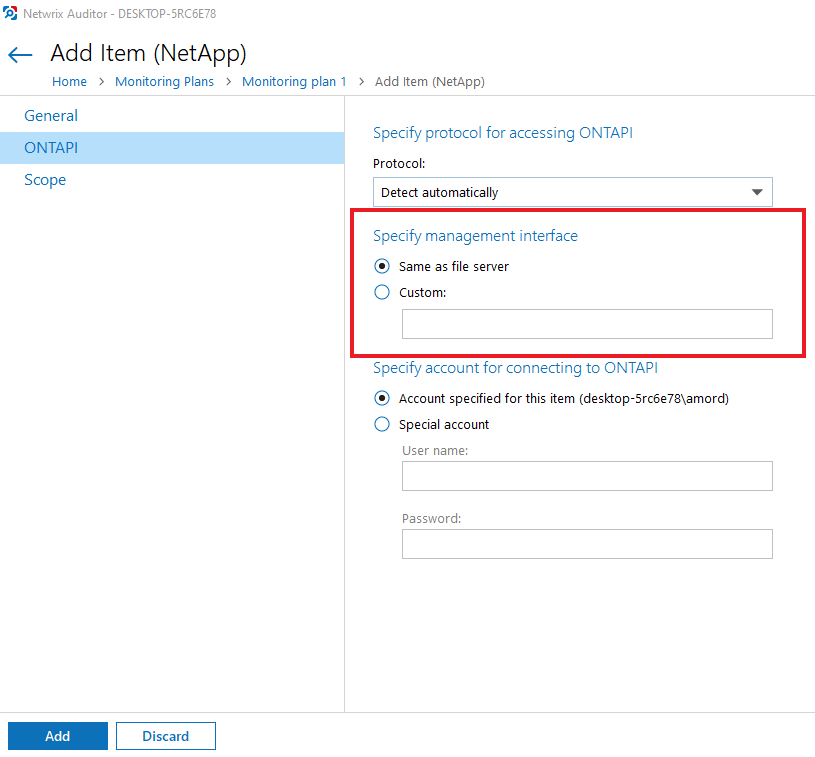
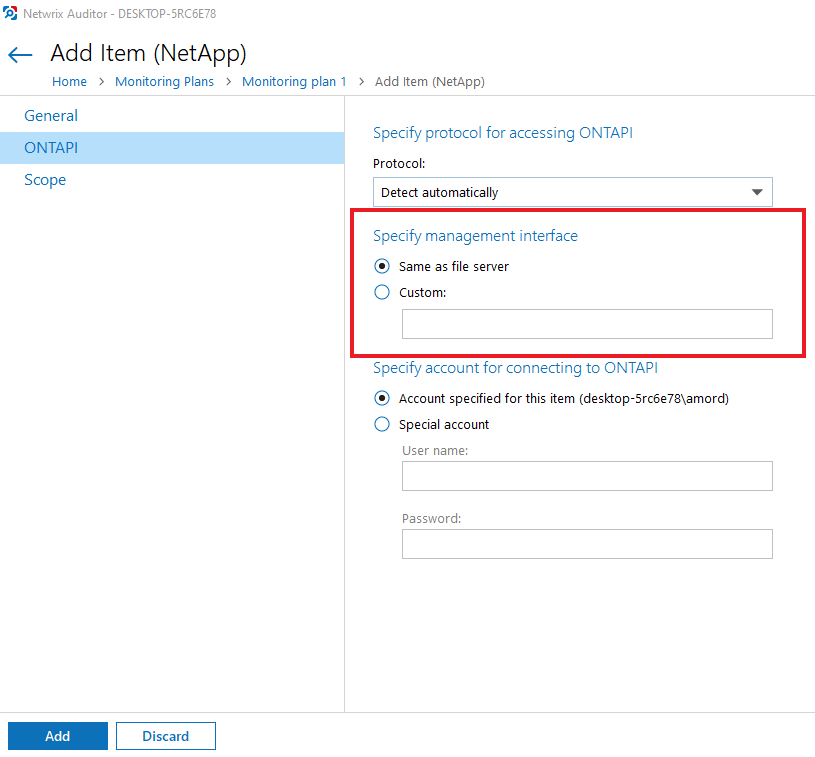

Symptom:
When you add NetApp for auditing and the collection fails immediately with the error below:
"Cannot start auditing the 'ServerName' server.
Failed to get file server information (0x8004959A ONTAPI error: Vserver API missing vserver parameter.)."
Cause:
Specified management interface is not the management interface of CIFS SVN you are trying to audit.
Solution:
Open Network Interfaces setting in Cluster management console. Find the interface that has Management Access enabled and is assigned to the SVM you are trying to audit. Remember it's IP address and specify it in the properties of the NetApp item in Netwrix Auditor in ONTAPI node.

Also make sure the account used to collect to ONTAPI assigned with a custom role on SVM that has the following capabilities with access query levels
See Creating Role on NetApp Clustered Data ONTAP 8 or ONTAP 9 and Enabling AD User Access
When you add NetApp for auditing and the collection fails immediately with the error below:
"Cannot start auditing the 'ServerName' server.
Failed to get file server information (0x8004959A ONTAPI error: Vserver API missing vserver parameter.)."
Cause:
Specified management interface is not the management interface of CIFS SVN you are trying to audit.
Solution:
Open Network Interfaces setting in Cluster management console. Find the interface that has Management Access enabled and is assigned to the SVM you are trying to audit. Remember it's IP address and specify it in the properties of the NetApp item in Netwrix Auditor in ONTAPI node.

Also make sure the account used to collect to ONTAPI assigned with a custom role on SVM that has the following capabilities with access query levels
| Version | readonly |
| Volume | readonly |
| vserver audit | all |
| vserver audit rotate-log | all |
| vserver cifs | readonly |
See Creating Role on NetApp Clustered Data ONTAP 8 or ONTAP 9 and Enabling AD User Access